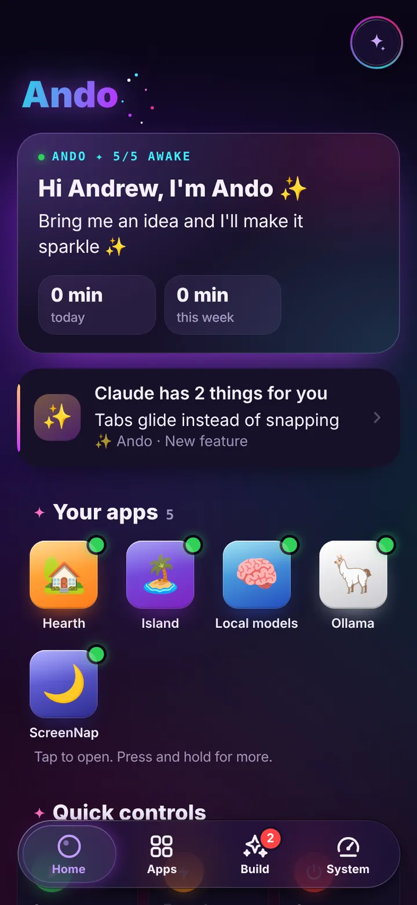
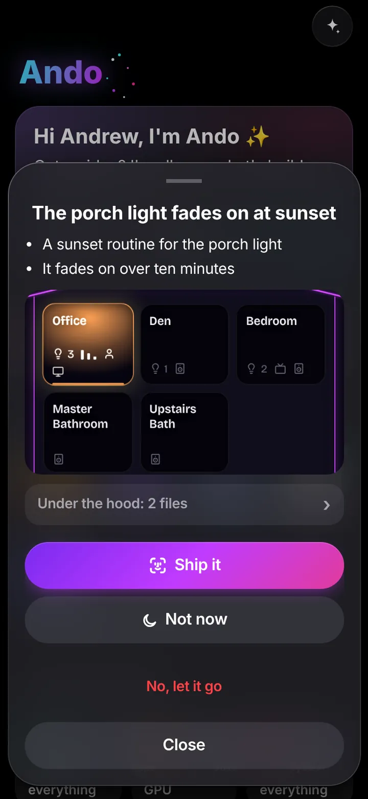

Work demos
Clickable rebuilds of the 21 tickets I worked at WT Cox and the Cover Image Miner, made with invented data so you can try each feature yourself.
Open the work demosJava backend developer near Charlotte, NC. Open to Charlotte-area and remote roles.
I build and support enterprise Java systems: backend features, API integrations, and automation that takes manual work off people’s plates.
I’m a Java backend developer near Charlotte, NC, with 3+ years in financial services at TIAA and subscription services at WT Cox Information Services. My work has centered on backend features, API integrations, reporting, and the tests that keep them working.
I graduated cum laude from UNC Charlotte with a B.A. in Computer Science, and I’m looking for my next backend role.
At home I run a small platform of self-hosted apps. They’re further down this page, each with captures of the real app and a simulation you can click through.
Jun 2024 – Feb 2025
Jun 2021 – Sep 2023
Jun – Aug 2020
Clickable rebuilds of the 21 tickets I worked at WT Cox and the Cover Image Miner, made with invented data so you can try each feature yourself.
Open the work demosApps I run on my own PC and use myself. The code is private, so each page shows the real app running on test data, the decisions behind it, and a simulation of its rules that runs in your browser.
A control plane for the apps I self-host
One page on my phone starts, stops and watches every app on my PC. Each app sits behind a door that opens only for me, and a feature the agent proposes on its own waits in an inbox until I approve it with a passkey.


A home hub that runs on my own PC
Lights, speakers, TVs, cameras and air purifiers, controlled directly over the home network. The cameras record to my own disk, and a local model answers questions about the house.
Read the Hearth case studyA 3D island in a browser tab
A small life sim drawn with three.js and no build step. Its residents are rigged and animated in the browser, and the island is lit by the real time of day.
Read the Mochi case studyI build the apps above with Claude Code, Anthropic’s coding agent. I write the requirements, set the rules every app has to follow, and decide what ships. Claude writes the code and the tests.
Everything goes through git and a test suite. What I ask for is built, tested and deployed. A feature Claude proposes on its own waits in an inbox until I approve it on my phone with a passkey, and the code that enforces that has its own tests and its own security review.
See the whole workflow